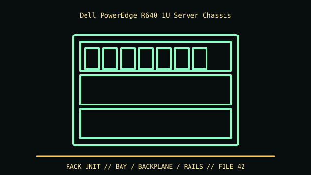

[ IDENTIFIED ENCLOSURE // POWEREDGE R640 (14G 1U RACK SERVER) ]
Dell PowerEdge R640 1U Server Chassis
42.8 × 482 × 733.8 mm (H × W × D without bezel; max depth with bezel about 772.7 mm). Measure with rail and cable management installed.

VARIANT / ARCHIVAL CAVEAT: R640 is distinct from R630 and R650; identify service tag, backplane and riser P/N. A matching 1U rail may not suit all rack post styles.
Mechanical specifications and fit
| Catalog identity | PowerEdge R640 (14G 1U rack server) |
|---|---|
| Dimensions and clearances | 42.8 × 482 × 733.8 mm (H × W × D without bezel; max depth with bezel about 772.7 mm). Measure with rail and cable management installed. |
| Drive bays / mounts | Front 8- or 10-bay 2.5-inch configurations; optional rear 2 × 2.5-inch positions on supported chassis. Backplane choice dictates SAS/SATA/NVMe. |
| Board, system and compatibility | Dell-specific 1U board, risers and low-profile card fit. The 10-bay chassis and rear storage option may alter riser/PSU arrangement. |
| Revision / identification | R640 is distinct from R630 and R650; identify service tag, backplane and riser P/N. A matching 1U rail may not suit all rack post styles. |
Preservation and installation notes
R640 is distinct from R630 and R650; identify service tag, backplane and riser P/N. A matching 1U rail may not suit all rack post styles.
Dell-specific 1U board, risers and low-profile card fit. The 10-bay chassis and rear storage option may alter riser/PSU arrangement.
- Capture the complete model/SKU, serial/date label, board assembly and bay/backplane/riser identifiers before disassembly; keep matched screws, trays, carriers, feet and cables with the case.
- Check the cited manual's specific build option before transferring hardware. Published maximum GPU, drive, fan or radiator capacity may not be simultaneous when a removable cage or alternative riser occupies that volume.
- For rack and vintage systems, preserve the exact rails, shields, doors, brackets and model-specific safety instructions; do not infer compatibility from a familiar brand or physical connector shape.
Manufacturer manuals and archival sources
- Dell PowerEdge R640 Technical SpecificationsPrimary manufacturer or model-specific technical/manual reference used for the identification and mechanical data above.
- Dell PowerEdge R640 manuals and documentsSecond product manual, manufacturer resource or established technical archive; choose the exact regional SKU and revision.
When exact dimensions depend on configuration, the text says so; verify the measured specimen before making a fit or restoration decision.